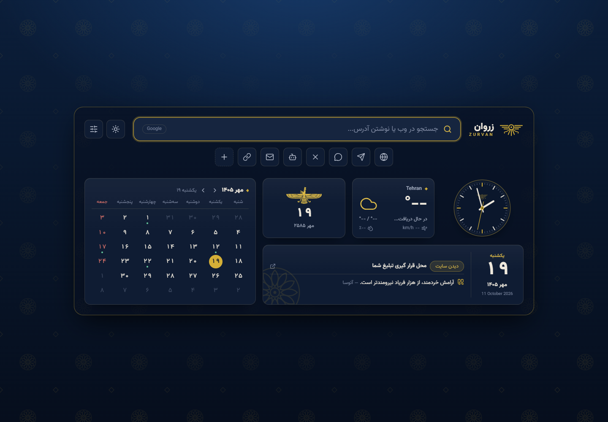

قرار با امروز
تقویم خورشیدی، مناسبتهای روز و تبدیل تاریخ؛ در کنار نمایش تاریخ با تقویمهای انتخابی، از جمله شاهنشاهی.
خورشیدیمیلادیشاهنشاهی
یک تب تازه باز کن. به دنیای خودت قدم بگذار.
زروان، خانهٔ فارسی مرورگرت با روح ایران باستان.
افزونهٔ تب جدید برای Chrome · فارسی و راستبهچپ
همهچیز، در یک نگاه
چیزهایی که هر روز به آنها سر میزنی،
حالا همانجایی هستند که روزت شروع میشود.
تقویم خورشیدی، مناسبتهای روز و تبدیل تاریخ؛ در کنار نمایش تاریخ با تقویمهای انتخابی، از جمله شاهنشاهی.
ساعت عقربهای زنده و ساعت شهرهای جهان. فاصلهها را به وقت محلی ببین.
از تهران تا هر کجای جهانآبوهوای شهر دلخواهت، دما و جزئیات هواشناسی؛ پیش از بیرون رفتن، یک نگاه کافی است.
شهر را خودت انتخاب کنابزارک نرخ ارز، طلا و سکه و مبدل ارز؛ با امکان انتخاب ارزها و اقلامی که دنبال میکنی.
اطلاعات دریافتی از سرویس نرخهابا Google، Bing یا DuckDuckGo جستجو کن و برای سایتهای محبوبت میانبر بساز.
به سلیقهٔ خودت
زروان با تو هماهنگ میشود. ابزارکها را جابهجا کن، اندازهشان را تغییر بده و فقط چیزهایی را نگه دار که به روزت معنا میدهند.

از تختجمشید تا تب جدید
ستونهای استوار، گلهای دوازدهپر و نقشهای بالدار؛ زبان بصری زروان از هنر ایران باستان الهام میگیرد و در یک تجربهٔ امروزی ادامه پیدا میکند.
سرمهای عمیق، طلایی گرم و رنگ روشن سنگ، کنار خط فارسی قرار گرفتهاند تا هر بار باز کردن مرورگر، کمی حس خانه داشته باشد.
پیش از اولین تب
زروان صفحهٔ تب جدید Chrome را با یک داشبورد فارسی جایگزین میکند. تقویم، ساعت، آبوهوا، میانبرها و ابزارکهای انتخابیات با باز کردن هر تب در دسترس هستند.
تنظیمات افزونه در فضای محلی مرورگر، با chrome.storage.local ذخیره میشوند. برای دریافت اطلاعاتی مانند هواشناسی و نرخها، افزونه به سرویسهای مربوط متصل میشود.
ابزارهای محلی مانند ساعت و تقویم به اینترنت نیاز ندارند. دریافت آبوهوا، نرخ ارز و طلا و تصاویر گالری به اتصال اینترنت و در دسترس بودن سرویسها وابسته است.
بله. در تنظیمات افزونه میتوانی حالت روشن یا تیره، رنگ، پسزمینه، شهر هواشناسی، موتور جستجو و ابزارکهای قابل نمایش را انتخاب کنی. چیدمان و اندازهٔ ابزارکها هم قابل تغییر است.